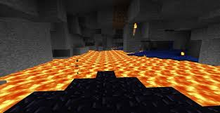

In minecraft there are a lot off different kinds of ore to find underground. Ore needs to mined with a pickaxe but thestronger the ore the better pickaxe you need to mine it. Ore can be smelted and crafted into very helpful resources.
To find different types of ore you need to be at certain y lvls. the higher you are there will be less valuble ore but more common ore like coal or copper. Iron can be found anywhere underground but is more common deep underground. To find dimaonds you have to be close to the bedrock layer/bottom of the world because it only spawns very low down. The lower down you are the more chance that there could be lava pools so don't dig straight down. There are also monstors that spawn down in the dark caves so make sure to be prepared. You will mine lots of stone and other types of rock like andersite and granite.
When you start the game you want to make a wooden pickaxe because you can't mine with your fists. after you mine 3 stone you will have 3 coble stone which can be used to make a stone pickaxe. a stone pickaxe is faster and more durable then the wooden one. Stone pickaxes can mine iron ore when wooden pickaxes can't. If you find iron ore you can smelt it in a furnace with coal to get iron ingiots. You can use 3 iron ingiots to help make a iron pickaxes which is faster and more durable then the stone pickaxe and can mine gold, emerald and diamond ore.